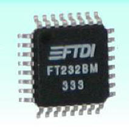

|
Características del FT232BM |
 |
El integrado FT232BM es una solución ideal para reemplazar el puerto RS232 por el USB en los nuevos diseños. Viene con drivers libres de royalties para la mayoría de los sistemas operativos, nosotros lo hemos probado en Windows y Linux.
Un único chip maneja tanto el USB como la tranferencia serie asíncrona.
La UART admite 7/8 bits de datos, 1/2 stop bits y Odd/Even/Mark/Space/No Parity.
Tasa de tranferencia de 300 Baudios a 3M Baudio (TTL).
Tasa de tranferencia de 300 Baudios a 1M Baudio (RS232).
Timeout ajustable para el buffer Rx.
Soporte para USB suspend/resume a través de los pines SLEEP# y RI#.
Soporte para alimentar dispositivos directamente del bus USB a través del pin PWREN#.
Circuito Power-On-Reset incluido.
Tensión de alimentación 4,35V a 5,25V.
Compatible con el controlador de host UHCI/OHCI/EHCI.
Compatible con USB 1.1 y USB 2.0.
USB VID, PID, número de serie y descripción del producto almacenados en una memoria EEPROM externa.
Encapsulado pequeño 32-LD LQFP o QFN-32.
Este documento se distribuyen bajo licencia FDL por lo que se permite su copia, modificación y distribución, siempre y cuando se mantenga esta nota.
| Pin | Nombre | Tipo | Descripción |
| 1 | EESK | Out | Sennal de Clock para la EEPROM |
| 2 | EEDATA | I/O | Conexión de datos hacia la EEPROM |
| 3 | VCC | PWR | Tensión de alimentación (+4,4V a +5,25V) |
| 4 | RESET# | In | Pin para poder realizar un reset desde el exterior. Si no se utiliza, se conectará a VCC. |
| 5 | RSTOUT# | Out | |
| 6 | 3V3OUT | Out | Salida del regulador L.D.O.integrado de 3,3V. Este pin debe conectarse a un condensador cerámico de 33nF. |
| 7 | USBDP | I/O | Sennal positiva datos USB (requiere una ressitencia de pull-up de 1,5K conectada a 3V3OUT o RSTOUT#) |
| 8 | USBDM | I/O | Sennal negativca datos USB |
| 9 | GND | Pwr | Pin de masa |
| 10 | SLEEP# | Out | Estado bajo mientras esté en USB Suspend Mode. |
| 11 | RXLED# | Out | Indicador LED de recepción de datos. Nivel bajo cuando se recibe algún dato. |
| 12 | TXLED# | Out | Indicador LED de transmisión de datos. Nivel bajo cuando se transmite algún dato. |
| 13 | VCCIO | Pwr | Especifica los niveles de tensión utilizados en la interfaz UART (3.0V - 5,25V). |
| 14 | PWRCTL | In | Nivel bajo, alimentado el FT232BM desde el bus USB. Nivel alto alimentado mediante conexión externa. |
| 15 | PRWEN# | Out | Nivel bajo cuando se ha configurado el FT232BM mediante USB. Nivel alto durante el periodo de suspensión del bus USB. Se puede usar para controlar la alimentación de dispositivos externos alimentados directamente desde el bus USB mediante un MOSFET P-Channel. |
| Pin | Nombre | Tipo | Descripción |
| 16 | TXDEN | Out | Habilita la transmisión de datos para RS485. |
| 17 | GND | Pwr | Pin de masa. |
| 18 | RI# | In | Ring Indicator. |
| 19 | DCD# | In | Data Carrier Detect. |
| 20 | DSR# | In | Data Set Ready. |
| 21 | DTR# | Out | Data Terminal Ready. |
| 22 | CTS# | In | Clear To Send. |
| 23 | RTS# | Out | Request To Send. |
| 24 | RXD | In | Pin de recepción. |
| 25 | TXD | Out | Pin de transmisión. |
| 26 | VCC | Pwr | Tensión de alimentación (+4,4V a +5,25V). |
| 27 | XTIN | In | Entrada al oscilador de 6MHz. |
| 28 | XTOUT | Out | Salida del oscilador de 6MHz. |
| 29 | AGND | Pwr | Gnd analógico para el multiplicador x8 del reloj interno. |
| 30 | AVCC | Pwr | VCC analógico para el multiplicador x8 del reloj interno. |
| 31 | TEST | In | Pone al FT232BM en modo test, debe de conectarse a GND para un funcionamiento normal. |
| 32 | EECS | I/O | EEPROM-Chip select. |
Future Technology Devices International Ltd.: Página del fabricante del integrado FT232BM
19/Abril/2005: Publicado en la web
A Ifara Tecnologías, por facilitarme unas muestras con las que he podido realizar este estudio.